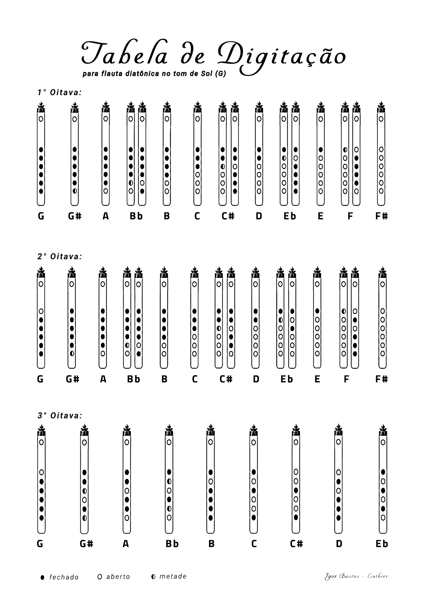

Calculadora de pife
Onde furar o seu pífano, em qualquer tom. Meça o tubo, escolha o tom e a calculadora mostra a posição de cada furo, desenha a flauta e gera um molde em tamanho real para imprimir.
Resultado
| Furo | Nota | Diâmetro | Da boca | Do pé | Até o de baixo | Alcance |
|---|
Tabela de digitação
Para o tom escolhido, nas três oitavas. Toque na imagem para ver grande e imprimir.

Afinador para flauta
Use o microfone do celular ou do computador. Nada é gravado. Toque uma nota de cada vez, segurando firme.
Calma mostra só a tendência da nota; Detalhada mostra cada tremida do sopro.
O gráfico mostra a afinação nos últimos segundos: linha reta = sopro firme; linha que sobe e desce = sopro instável.
Mapa de afinação deste pife
Usa o tom escolhido na calculadora. Toque cada nota e segure um pouco: o resultado entra na tabela (cents acima + ou abaixo − do afinado). Assim você vê de uma vez quais notas e quais oitavas precisam de ajuste.
Teste de oitavas (para ajustar a rolha)
Toque a nota grave com tudo fechado e segure. Depois, com a mesma posição, toque a 2ª oitava. O afinador mostra se a 2ª oitava está alta ou baixa em relação à oitava perfeita e o que fazer com a rolha.
Toque a nota grave.
Nota de referência
Toca um som na nota escolhida, para afinar de ouvido ou conferir o tom.
Ajuste fino depois de furar
O objetivo é toda nota marcar 0 no afinador (afinada). Se uma nota marcou outro número, digite aqui: positivo (+) é nota alta, negativo (−) é nota baixa. A calculadora diz o que fazer no furo.
Guia: do bambu ao pife afinado
Este guia vai na ordem em que o pife é feito: entender como ele funciona, escolher e medir o tubo, preparar a cabeça (rolha e furo do sopro), fazer os furos dos dedos e afinar.
1. Como um pife funciona
Quando você sopra na borda do furo do sopro, o ar dentro do tubo vibra. Quanto mais comprido o tubo que vibra, mais grave a nota. Os furos dos dedos servem para "encurtar" o tubo: abrindo um furo, o ar vibra só até ali, e a nota sobe. Com os seis furos fechados sai a nota mais grave, o tom do pife (num pife em Sol 4, o Sol de 392 Hz).
Soprando mais firme, a mesma posição dos dedos dá a mesma nota uma oitava acima (2ª oitava), e mais firme ainda, a 3ª oitava. Um pife bom é aquele em que cada nota fica afinada nas três oitavas ao mesmo tempo. Quase tudo o que vem a seguir (a grossura do tubo, a parede, a rolha, a cabeça cônica, o tamanho e o acabamento dos furos) serve para isso: deixar as oitavas afinadas entre si e o som cheio.
2. Escolher o tubo certo para cada tom
Cada tom pede uma grossura de tubo. Um bambu curto e grosso não fica bom, nem um longo e fino demais: a flauta precisa estar dentro de uma proporção para responder bem. Por isso, antes de cortar, olhe o tubo que você tem nas mãos e escolha o tom que combina com ele. A calculadora mostra, embaixo do diâmetro interno, a medida indicada para cada tom.
- Tubo mais fino que o indicado favorece os médios e os agudos, e pode até aumentar o alcance de oitavas.
- Tubo mais grosso favorece os graves.
- Mas existe um limite: fino demais ou grosso demais para o tom, o pife deixa de responder bem nos graves ou nos agudos. O ideal é ficar perto da medida indicada.
Qual tom fazer com o seu tubo?
Digite o diâmetro interno do bambu ou tubo que você tem.
Tabela completa: tom e diâmetro interno
| Tom | Diâmetro indicado | Ainda funciona bem |
|---|
Prefira bambu de entrenó longo
O melhor é um bambu com entrenó longo, em que a flauta inteira caiba entre dois nós. Cada nó no meio do tubo forma um estreitamento por dentro. Se esse nó não for totalmente lixado e retificado por dentro, até ficar liso e na mesma medida do resto, ele atrapalha o som e a afinação não sai como a calculadora prevê.
A parede certa
No Sol 4, uma parede de uns 4 mm costuma dar ótimo resultado; nos outros tons vale a mesma proporção com o diâmetro interno (a calculadora mostra o valor de cada tom). Parede muito fina dá pouca sustentação ao som; para isso existe o porta-lábios.
3. Como medir o tubo
Você precisa de 3 medidas. Um paquímetro simples resolve todas; se não tiver, dá para usar brocas e régua.
- Diâmetro interno é a largura do buraco do tubo. Com paquímetro, use as pontas de cima, as que medem por dentro. Sem paquímetro, procure a maior broca que entra justa no tubo: o número dela é o diâmetro. Bambu não é bem redondo, então meça nas duas pontas e use a média.
- Parede é a grossura do tubo. Meça o tubo por fora, tire o diâmetro interno e divida por 2. Exemplo: 26 mm por fora e 18 mm por dentro dá uma parede de 4 mm.
- Porta-lábios: se a flauta tiver, meça a espessura dele (a altura da peça, sem contar o tubo) e marque "Tem porta-lábios". Quanto mais grosso, mais fundo fica o furo do sopro e mais grave a flauta: a calculadora já desconta isso no comprimento.
- Furo do sopro: meça a largura do furo onde você sopra. Ainda não fez esse furo? Comece pequeno: num tubo de 18 mm por dentro, um furo de 10 mm. Num tubo mais fino ou mais grosso, o furo acompanha (tubo de 15 mm, uns 8 mm; tubo de 23 mm, uns 12 mm). Se o furo for oval, escolha "Oval" e digite a largura (atravessando o tubo) e o comprimento (ao longo do tubo): a calculadora faz a conta.
E a rolha? Rolha é a tampa (de cortiça ou madeira) que fecha a cabeça do pife, acima do furo do sopro. Ela não precisa ser medida: a calculadora mostra no resultado onde colocá-la, e a parte 4 explica como ajustar.
4. A cabeça: rolha, furo do sopro e conicidade
A cabeça é a parte acima e em volta do furo do sopro. É ali que se decide boa parte do equilíbrio entre as oitavas.
A rolha e o equilíbrio entre as oitavas
A rolha (o stopper) parece um detalhe, mas é o primeiro ajuste da afinação entre as oitavas. Ela regula, ao mesmo tempo, o grave e as notas de cima:
- Rolha mais perto do furo do sopro: a 2ª e a 3ª oitava sobem, mas o grave fica abafado.
- Rolha mais longe: o grave fica livre e cheio, mas a 2ª e a 3ª oitava caem (a nota "subtona" lá em cima).
Um teste clássico: encoste bem a rolha no furo do sopro e toque a nota fundamental (tudo fechado) nas três oitavas. O grave sai abafado, a 2ª oitava sai alta e a 3ª mais alta ainda. Agora vá afastando a rolha aos poucos: o grave vai se soltando e a 2ª e a 3ª oitava vão descendo. O ponto certo é onde as três oitavas da fundamental ficam afinadas entre si, com o grave ainda livre. Comece pela distância que a calculadora indica (cerca de um diâmetro interno) e ajuste a partir dela.
Na cabeça cônica: o cone já empurra a 2ª e a 3ª oitava para cima por natureza. Por isso a rolha não precisa ficar tão colada no sopro para as oitavas baterem: ela fica um pouco mais longe, e isso libera o grave. Numa cabeça reta, para conseguir o mesmo equilíbrio, a rolha tem que chegar mais perto, e o grave abafa. É por isso que a cabeça cônica dá um pife afinado nas três oitavas e com grave cheio ao mesmo tempo.
A conicidade natural do bambu
Alguns bambus vão estreitando por dentro perto do nó. Essa conicidade, usada do jeito certo, melhora a afinação do pife: ponha a parte que estreita do lado da cabeça. Assim a tônica não fica baixa na 2ª e na 3ª oitava.
Onde fazer o furo do sopro no cone: a cabeça do Boehm
O "melhor ponto" não precisa ser no olho. Theobald Boehm, que criou a flauta moderna, mediu e descreveu a cabeça ideal: o tubo é reto (cilíndrico) no corpo, e na cabeça ele estreita em curva (uma parábola, não um cone reto). O estreitamento começa a 1/4 do comprimento da flauta, contando a partir da rolha, e termina na rolha com o diâmetro 10% menor. Numa flauta de 19 mm, a rolha fica em uns 17,1 mm. Como a curva é suave no começo e mais forte perto da rolha, o furo do sopro acaba ficando onde o tubo já está com cerca de 90 a 91% do diâmetro do corpo.
Adaptando para o pife: procure no seu bambu o ponto onde o diâmetro interno tem uns 90 a 91% do diâmetro da região dos furos dos dedos (por exemplo, 16,3 mm num tubo de 18 mm), faça ali o centro do furo do sopro, e ponha a rolha a cerca de um diâmetro interno acima. Se marcar "Cabeça cônica" na calculadora, ela leva isso em conta no cálculo e mostra as medidas da cabeça do seu pife no modelo do Boehm.
Parábola e cone reto: na parábola o diâmetro muda pouco no começo e mais perto da rolha; no cone reto muda sempre igual. Boehm achou a parábola melhor para a afinação das oitavas. Fabricar parábola é difícil, por isso muita flauta comercial usa cone reto, que chega perto.
A cunha de Fajardo: Raoul Fajardo inventou um outro caminho: em vez de estreitar o tubo, ele põe uma cunha (uma peça inclinada) dentro de uma cabeça reta, que estreita o espaço por dentro do mesmo jeito. Girando ou empurrando a cunha, dá para afinar as três oitavas entre si. É uma boa ideia para quem usa tubo reto, como PVC ou metal.
Observação: mesmo com "Cabeça cônica" marcada, os furos dos dedos são calculados para um corpo reto. Num bambu que também afina ao longo do corpo, use a medida da região dos furos e confira no afinador.
Porta-lábios
Em tubo de parede fina, o porta-lábios "reengrossa" a parede no furo do sopro. Isso dá mais sustentação ao som e, ao mesmo tempo, melhora o equilíbrio entre a 1ª e a 2ª oitava de cada furo dos dedos, principalmente das notas mais perto do bocal, que tendem a ficar baixas (subtonar) na 2ª oitava. Se a sua flauta tiver um, marque "Tem porta-lábios" na calculadora: ele deixa o furo do sopro mais fundo, e a calculadora encurta o tubo para compensar.
5. Os furos dos dedos
Tamanho dos furos
Você pode escolher o tamanho de cada furo: a calculadora muda o lugar dele para a nota continuar afinada. Furo maior fica mais perto do pé e dá som mais forte. Furo menor fica mais perto da boca e deixa os furos mais juntos, bom para mãos pequenas. O 3º furo (contando a partir do pé) faz só meio tom de diferença, por isso costuma ser o menor.
Alcance: quantas oitavas cada furo dá
Cada furo tem um limite de agudo, que depende do tamanho dele e da distância até o furo de baixo (os técnicos chamam de frequência de corte). Furo grande e perto do vizinho deixa as notas agudas saírem fácil; furo pequeno e longe "abafa" a 2ª e a 3ª oitava. A calculadora mostra isso em cores:
- ● Ótimo: 2 oitavas e meia ou mais, agudos fáceis.
- ● Bom: 2 oitavas tranquilas.
- ● Limitado: a 2ª oitava exige sopro firme. Aumente esse furo.
- ● Fraco: a nota sai abafada. Aumente bem esse furo.
O alcance do pife é o do pior furo. Aumentar um furo muda a posição dele; a calculadora já recalcula.
Chaminé e undercut: afinando as oitavas de cada furo
O furo não é só um buraco: ele tem uma altura, que é a espessura da parede naquele ponto. Os flauteiros chamam esse "canal" de chaminé. A altura e o formato da chaminé mudam o som e a afinação.
- Parede grossa e furo reto: o ar faz um caminho um pouco mais longo e encontra mais resistência. A nota fica um pouco mais grave e "segura". Às vezes é isso que se quer, às vezes não. A calculadora já leva a parede em conta: com parede mais grossa, ela sobe os furos.
- Chaminé do furo do sopro: uma boa altura é de 4 a 4,3 mm (4,3 é a medida que o Theobald Boehm recomenda). Chaminé alta demais dificulta passar para a 2ª oitava. Em tubo de parede fina, use porta-lábios.
- Por que a 2ª oitava fica baixa: a chaminé funciona como um pedacinho a mais de tubo em cada furo. Esse "pedaço extra" pesa mais nas notas agudas do que nas graves. Por isso, quanto mais grossa a parede, mais alta a chaminé e mais a 2ª oitava daquela nota tende a sair baixa em relação à 1ª.
- Undercut é alargar a borda de dentro do furo, deixando o furo em forma de funil por dentro. Ele encurta esse "pedaço extra" justamente para as notas agudas, e assim sobe a 2ª oitava daquela nota. Regra prática: quanto mais grossa a parede, mais undercut é preciso para a 2ª oitava subir e ficar afinada com a 1ª. É mais necessário em bambu de parede grossa e em flautas pequenas, mas vale usar sempre um pouco. Ele tem limite: o primeiro ajuste das oitavas é a rolha; o undercut vem depois, para o detalhe. Uma micro-retífica com ponta cônica faz bem o serviço.
- Desgaste por fora (chanfrar ou arredondar a borda de fora do furo) tende a subir mais a 1ª oitava daquela nota.
- Tamanho dos furos dos dedos: furos de até uns 11 mm, com undercut, dão som cheio. Maiores que isso, quem está começando costuma reclamar; tocadores experientes e de pife gostam de furos mais largos. Furos estreitos ficam entre 7 e 8 mm.
- Qual lado furar: se a parede varia ao redor do tubo, faça os furos no lado em que ela tem cerca de 4 a 4,3 mm. E, se o tubo tiver uma ponta cônica (estreitando por dentro), faça o furo do sopro nessa ponta, de preferência: veja a cabeça do Boehm.
A calculadora não calcula o undercut: ele é parte do ajuste fino, depois de furar, conferindo no afinador.
O que mais melhora um pife
Não é uma coisa só, é o conjunto das escolhas: tubo na proporção certa, bocal na região cônica, porta-lábios em tubo de parede fina, furos dos dedos de bom tamanho, acabamento no furo do sopro e bambu bem selado por dentro. Cada item ajuda um pouco.
6. Passo a passo para fazer o pife
- Escolha o tubo, meça e preencha a calculadora.
- Primeiro a cabeça: faça o furo do sopro perto de uma ponta e coloque a rolha acima dele, na distância que a calculadora mostra.
- Depois o tom: deixe o tubo uns 2 cm mais comprido do que "da boca ao pé" e vá cortando aos poucos, tocando com tudo aberto no fim do tubo, até a nota fundamental bater no afinador. Cortar sobe a nota; não dá para voltar, então corte pouco de cada vez.
- Com o tom achado, imprima o molde, confira a régua de 10 cm com uma régua de verdade, cole no tubo e marque os centros dos furos.
- Fure menor do que o indicado (1 mm a menos basta). Comece pelo furo 1, perto do pé, e vá alargando aos poucos até a nota bater no afinador. Depois o furo 2, e assim por diante.
- Confira cada nota também na 2ª oitava e use o ajuste fino acima (alargar, undercut, rolha) para equilibrar as oitavas.
Quem sopra também afina
Cada flautista tem um jeito de soprar. Sopro mais forte tende a subir a afinação; sopro mais fraco, a baixar. O ponto onde o jato de ar bate na borda do furo do sopro, e o quanto o lábio cobre esse furo, também mudam a nota. Uma embocadura treinada tira um som nítido e afinado; quem está começando costuma tocar mais baixo (subtonado) e com som soproso.
Por isso, a mesma flauta pode soar bem diferente nas mãos de um iniciante e de um flautista experiente. Na hora de afinar, sopre do jeito que você (ou quem vai tocar) sopra normalmente, sem forçar, e afine para esse sopro. Se puder, peça para alguém mais experiente conferir.
Palavras que aparecem aqui
- Cents
- Medida pequena de afinação: 100 cents são um semitom. O afinador do celular mostra.
- Embocadura
- O furo onde se sopra.
- Rolha
- A tampa que fecha a cabeça do pife, acima do furo do sopro.
- Alcance (frequência de corte)
- Indica até onde os agudos saem bem naquele furo. Veja a explicação de alcance acima.
Referências
De onde vêm as informações deste guia:
- Chaminé mais alta abaixa a nota: a altura do furo funciona como o "pescoço" de um ressonador; mais alto, mais ar para mover, nota mais grave. Colunas de ar e orifícios tonais (tradução de guia de construção de flautas); Benade, Fundamentos da Acústica Musical, cap. 21 (correção de comprimento dos furos abertos, espessura efetiva t + 0,75d, a mesma conta desta calculadora).
- Undercut sobe a nota e é usado para reafinar: "escarear por baixo tem efeito semelhante ao alargamento do orifício… permite elevar o tom", e pode afetar outras notas. Colunas de ar e orifícios tonais.
- Undercut mexe nas oitavas de forma diferente: mudar o undercut de um furo "afeta a 1ª e a 2ª oitava" daquela nota. The Hole in the Middle: Transverse Flute.
- Undercut deixa o som mais limpo: diminui os redemoinhos de ar nas bordas vivas do furo e concentra mais energia na nota fundamental. Lasickas et al., J. Acoust. Soc. Am., 2025 (medição com PIV).
- Os construtores antigos já faziam: nos traversos holandeses dos séculos XVII e XVIII, todos os furos do sopro e quase todos os furos dos dedos são undercut, em graus diferentes. Dutch Traversos (catálogo de medições).
- Chaminé funda e undercut no sopro: chaminé mais funda dá um timbre melhor, e o undercut compensa o furo menor e a chaminé funda. Irish Flute Design Optimization; o bocal moderno usa undercut embaixo e leve chanfro por cima (Flute Headjoints).
- Chaminé de 4,3 mm no sopro: medida de Theobald Boehm.
- A rolha muda a afinação das oitavas de cima: Fletcher, Strong e Silk mediram a mesma cabeça de flauta com a rolha a 15, 17 e 19 mm do centro do sopro e mostraram que essa distância muda a afinação das ressonâncias mais agudas (Acoustical characterization of flute head joints, J. Acoust. Soc. Am. 71, 1982). Na flauta Boehm, a rolha fica a cerca de 17 mm. Em Colunas de ar e orifícios tonais: "a posição da rolha afeta a resposta e a afinação do registro".
- A cabeça estreita corrige as oitavas num corpo reto: Rindel, Flute acoustics, BNAM 2021.
- Cabeça parabólica do Boehm (estreitamento a partir de 1/4 do comprimento, diâmetro 10% menor na rolha, curva de parábola): Boehm, citado em Rindel, Flute acoustics, BNAM 2021; Fletcher et al., 1982.
- Cunha acústica: Raoul J. Fajardo, patente "Junta de cabeça cilíndrica com cunha acústica para flauta de concerto", traduzida no apêndice 4 de Colunas de ar e orifícios tonais.
- Detecção de altura do afinador: método YIN, de Cheveigné e Kawahara, J. Acoust. Soc. Am. 111, 2002.
- Regras práticas (tubo por tom; parede de 4 mm no Sol 4; o teste da rolha; parede grossa pede mais undercut para a 2ª oitava; desgaste por fora sobe mais a 1ª oitava; furos até 11 mm): experiência de Igor Bastos em anos de construção de pífanos e flautas.
Tabelas de digitação: veja aqui.
Como funciona: motor de cálculo próprio, feito a partir das fórmulas publicadas do método de comprimento efetivo (Flutomat, de Pete Kosel, baseado no trabalho de Hans Bracker e C. J. Nederveen). O resultado é um ponto de partida: cada tubo é um, por isso fure menor e ajuste no afinador.